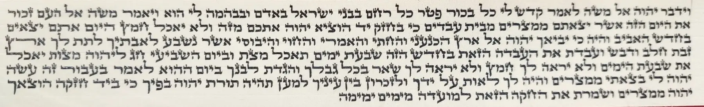
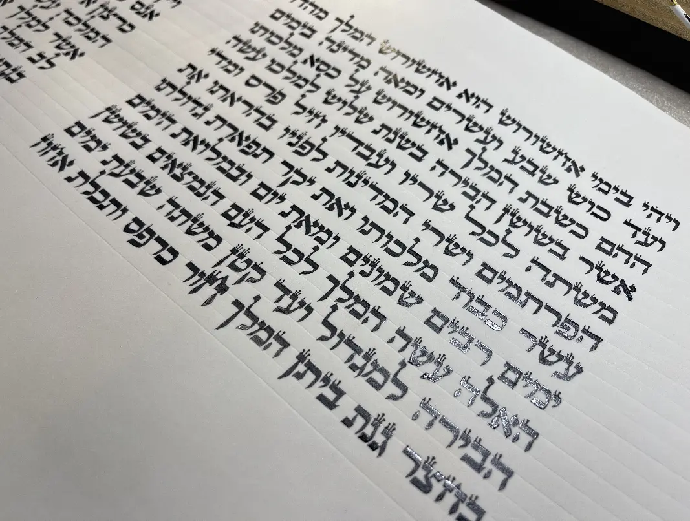
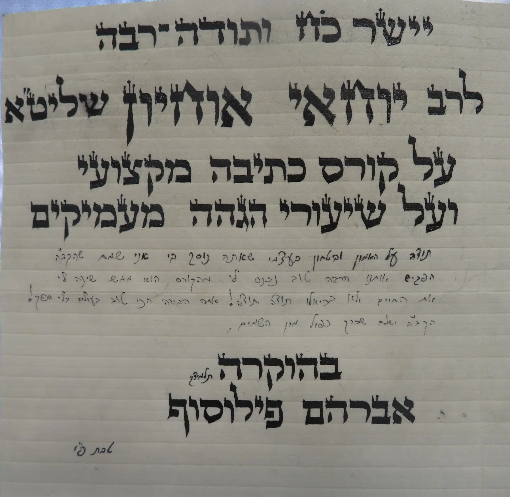

יסודות נכונים
ישיבה, זווית השולחן, מנח הקלף, אחיזת הקולמוס ותנועת היד.
הרשמה למחזור אלול · בני ברק
קורס כתיבת סת״ם מקצועי בכתב ספרדי, בשיטה מסודרת שמובילה מן היסודות ועד לכתב הלכתי, מדויק, יפה וזורם.
שיטת הרב אוחיון מחלקת את האותיות למשפחות ובונה את יכולת הכתיבה שלב אחר שלב. כך מתפתחים אחידות, דיוק וזרימה — ולא אוסף של צורות נפרדות.
ישיבה, זווית השולחן, מנח הקלף, אחיזת הקולמוס ותנועת היד.
זיהוי הנקודה המדויקת שמעכבת כל תלמיד ומתן תרגול מתאים.
קלף בשפע, תרגול בין המפגשים והתקדמות הדרגתית לכתב מקצועי.
עבודות שנכתבו בידי תלמידים במהלך הדרך ולאחר הקורס.



בדיקת התאמה ללא התחייבות
השאירו שם וטלפון, ונחזור אליכם כדי להסביר על דרך הלימוד ולבדוק אם המחזור הקרוב מתאים לכם.
אפשר גם לשלוח הודעה בווטסאפ או להתקשר: 053-4177677.